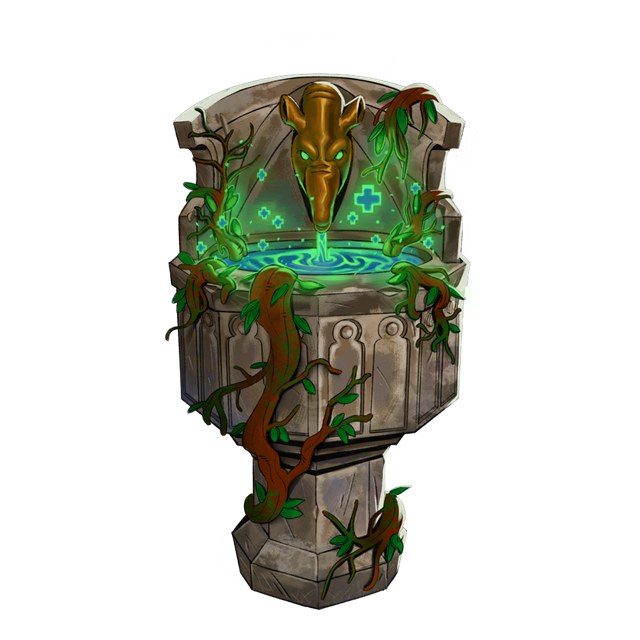
Fountain of Life
Touch the fountain. It heals a large part of your life. There is no skip and no cost.
Inside the dungeon
Event rooms can heal you, curse you, trade with you, or change a card. You can skip most of them. Shrines always apply when you touch them.

Touch the fountain. It heals a large part of your life. There is no skip and no cost.
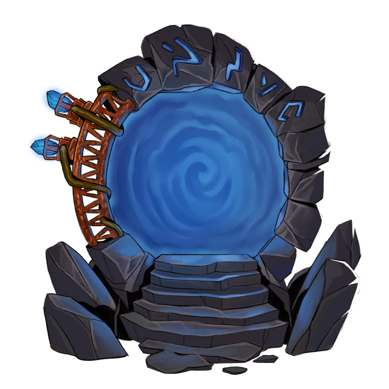
Step through to jump straight to this floor’s boss room, or skip and keep exploring the floor.
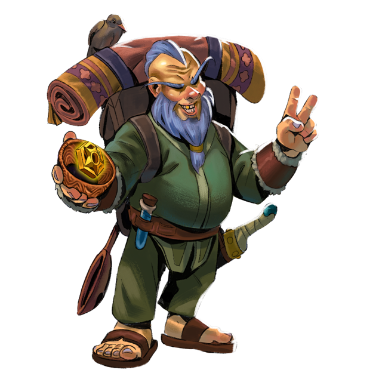
Pick an item from your backpack and wager it on a cup. Win and you keep the original plus a copy. Lose and the item is gone. Skip leaves with the item.
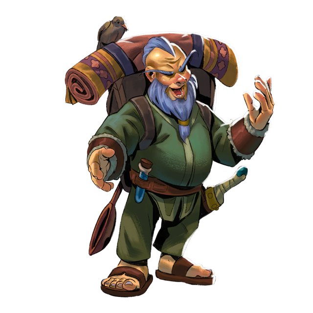
Deal: he takes one random relic you brought into the dungeon and pays you coins. Skip: walk away.
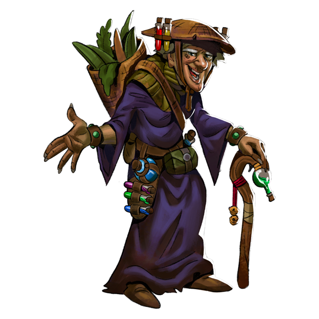
If you have potions, she asks for your weakest one. Offer it for a chance at a much stronger potion of the same kind — or lose it. If you have none, she can sell you a basic healing potion. Skip leaves you as you are.
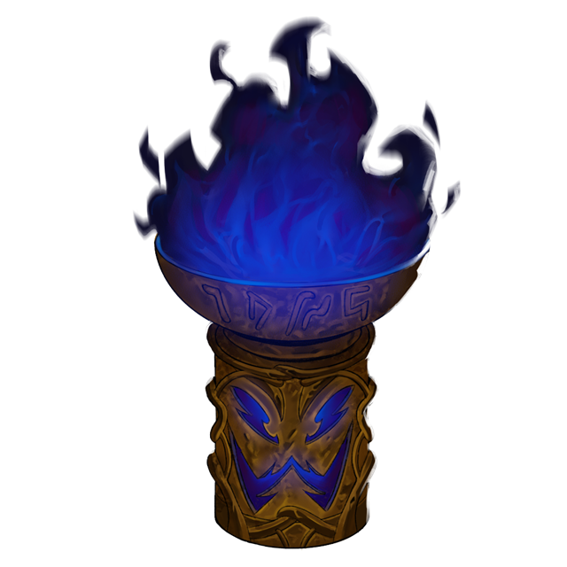
Offer a card from this dungeon’s deck to the fire. That card is gone for the rest of the run. The flames give nothing back. Skip to leave your deck alone.
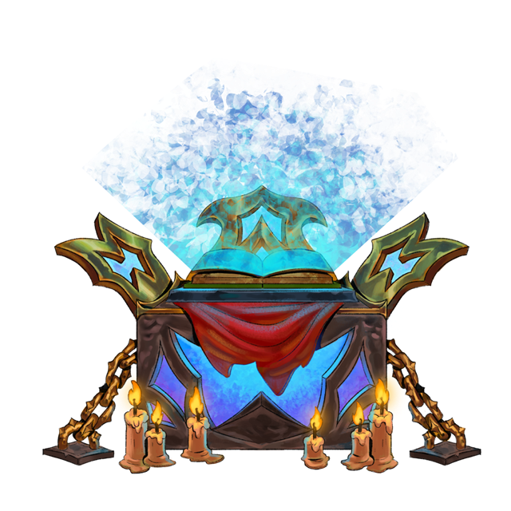
Choose a card and start the ritual. Success gives the card a large amount of extra XP. Failure resets that card’s XP. The result stays after you leave the dungeon. Skip to walk away.
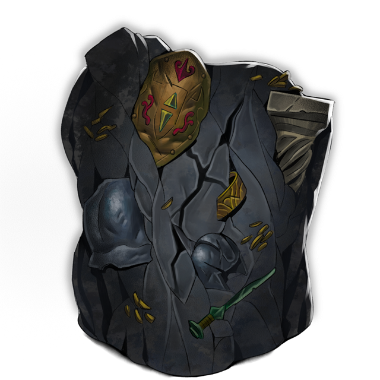
Spend a Bomb to blow the mound and receive equipment. Out of bombs, you can watch one ad per dungeon to dig once. Skip to leave it buried.

An egg hatches. Tap the pet enough times before it escapes. Catch it and it joins you as loot. Fail or skip and it gets away.
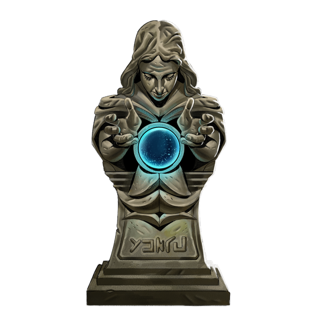
Touch it to raise one of your dungeon stats for the rest of the run. There is no skip. The shrine may already show which stat, or pick one when you touch it.
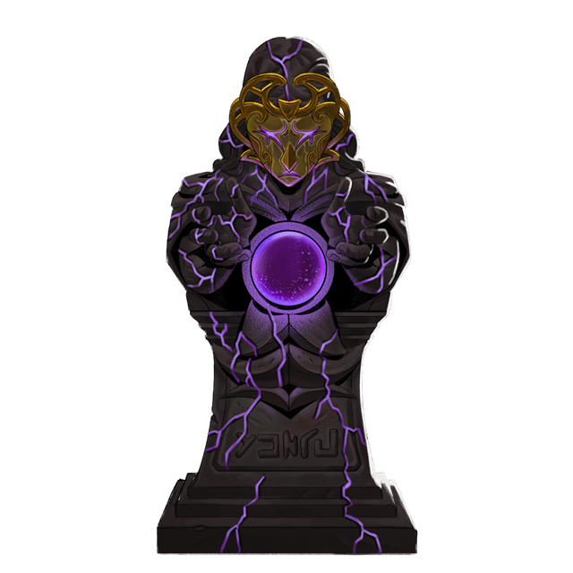
Touch it to lower one of your dungeon stats for the rest of the run. There is no skip. The shrine may already show which stat, or pick one when you touch it.
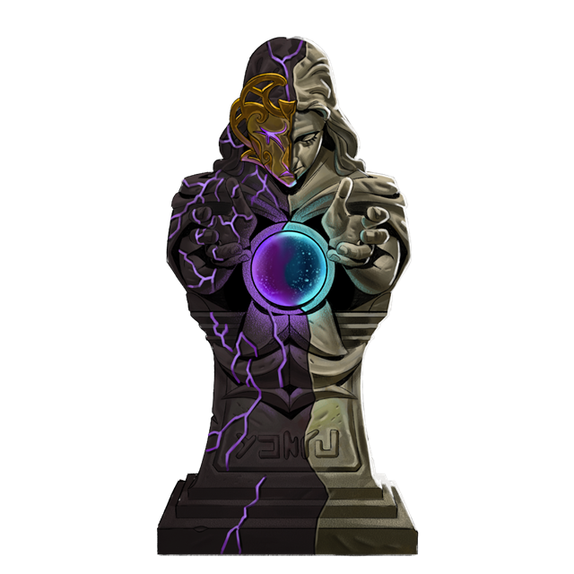
Touch it and tempt your fate. The same stat can rise or fall. There is no skip.
Blessed, Cursed and Random shrines change one of these for the rest of the dungeon.
 Speed
Speed
 Strength
Intelligence
Strength
Intelligence
 Accuracy
Evasion
Critical Chance
Critical Damage
Accuracy
Evasion
Critical Chance
Critical Damage
 Luck
Luck
No event matches that search.